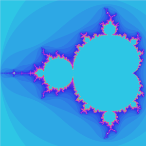

Our implementation uses a pretty typical mandelbrot set procedure. The idea of the algorithm is to figure out whether the following series converges or not:
x0 = c
xn = xn-12 + c
Evaluation of the series continues until it converges (that is to say until xn - xn-1 is less than some threshold). The image is created by choosing c to be a point in the complex plane, and then testing how many iterations are required until the value converges. The idea is to choose upper and lower bounds in the complex plane, a width and height for the image and do this procedure for each point. Then, using the number of iterations each point took to converge (or diverge) we can color the image.
Although there are functional programming tools (like lists:foreach and lists:map), in general iteration in Erlang is done via tail-call recursion, so in our program we generate a list of evenly-spaced numbers between the complex bounds for each row (similar to numpy's linspace function). In practice our we build each row of values like this:
%% @doc Calculates a row of the set
create_set_row([], _, _, List) ->
List;
create_set_row([Current | Rest], Test, MaxIter, List) ->
Elem = calc(…),
create_set_row(Rest, Test, MaxIter, [Elem | List]).
The first clause in this function is the base case, which simply returns the list
that has the values for this row in it. Otherwise, we grab the first element from
[Current | Rest], using it and our value for
Test to calculate perform the convergence
test on this point. We then recurse, passing the Rest
of the points in this row on to the recursive call, as well as appending
Elem to the result list.
The test for whether the series converges or not (the calc function in
create_set_row/4 shown above), is a similar recursive
function.
%% @doc Checks if (and how fast) the series diverges
mandelbrot_calc(_, _, 0, _, _, _) ->
0;
mandelbrot_calc(Real, Imaginary, Maxiter, Index, InitR, InitC) when Maxiter > 0 ->
Mag = math:sqrt(Real * Real + Imaginary * Imaginary),
if
Mag >= 2 ->
Index;
Mag < 4 ->
NewR = Real * Real - Imaginary * Imaginary + InitR,
NewI = 2 * Real * Imaginary + InitC,
mandelbrot_calc(NewR, NewI, Maxiter - 1, Index + 1, InitR, InitC)
end.
Without any kind of complicated post-processing, there aren't many options for applying colors to the picture other than assigning a color for each value from the Mandelbrot calculation. We tried a couple of different approaches for this color mapping function, one of which is shown below:
color_mapper(Val) when is_integer(Val) ->
hsv_color(mod(Val * 5 + 190, 360), 0.8, 0.9).
hsv_color/3 to calculate
a one-to-one mapping of Mandelbrot value to hue. This allows us to mess around
with the spacing of the hue values, which leads to a larger range of colors in
the final image. This function is what results in the relatively normal images below
(the first two and the last one).

Something else we tried was simply squaring
Val, which resulted in the striped patterns in the other
images. We also found that higher powers resulted in different color schemes, a
couple of which are shown below.
One last thing to note about the rendering process is the actual image creation. We used
egd,
which is a library normally bundled with a different Erlang library, and is used to
build graphs dynamically for a profiling tool called
percept.
Beause of the fact that it's really designed to draw solid lines and simple shapes,
the design is really suboptimal for our purposes, and drawing the image is by far
the least efficient piece of our program. This could also be due to the way
build_image/4 is defined (shown below).
%% @doc Base case for a row
build_image(_, [], 0, _) ->
ok;
%% @doc Base case for a column
build_image(_, [], _, 0) ->
ok;
%% @doc Finished drawing
build_image(Img, [], 0, 0) ->
Img;
%% @doc Run for each row
build_image(Img, [First | Rest], X, Y) when is_list(First) ->
build_image(Img, First, X, Y),
build_image(Img, Rest, X, Y-1);
%% @doc Run for each column
build_image(Img, [First | Rest], X, Y) when is_integer(First) ->
egd:line(Img, {X, Y}, {X-1, Y-1}, color_mapper(First)),
build_image(Img, Rest, X-1, Y).
run(W, H) ->
BottomX = -0.745458,
TopX = -0.745398,
Middle1X = BottomX + ((TopX - BottomX) / 3),
Middle2X = BottomX + (((TopX - BottomX) * 2) / 3),
BottomY = 0.112979,
TopY = 0.113039,
Middle1Y = BottomY + ((TopY - BottomY) / 3),
Middle2Y = BottomY + (((TopY - BottomY) * 2) / 3),
run_bounds(BottomX, Middle1X, BottomY, Middle1Y, W, H, "1_1"),
run_bounds(Middle1X, Middle2X, BottomY, Middle1Y, W, H, "2_1"),
run_bounds(Middle2X, TopX, BottomY, Middle1Y, W, H, "3_1"),
run_bounds(BottomX, Middle1X, Middle1Y, Middle2Y, W, H, "1_2"),
run_bounds(Middle1X, Middle2X, Middle1Y, Middle2Y, W, H, "2_2"),
run_bounds(Middle2X, TopX, Middle1Y, Middle2Y, W, H, "3_2"),
run_bounds(BottomX, Middle1X, Middle2Y, TopY, W, H, "1_3"),
run_bounds(Middle1X, Middle2X, Middle2Y, TopY, W, H, "2_3"),
run_bounds(Middle2X, TopX, Middle2Y, TopY, W, H, "3_3").